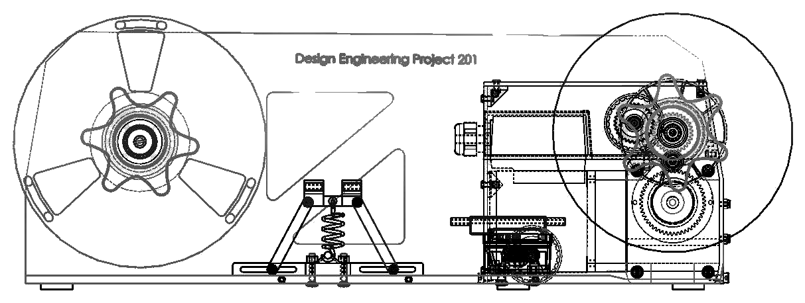
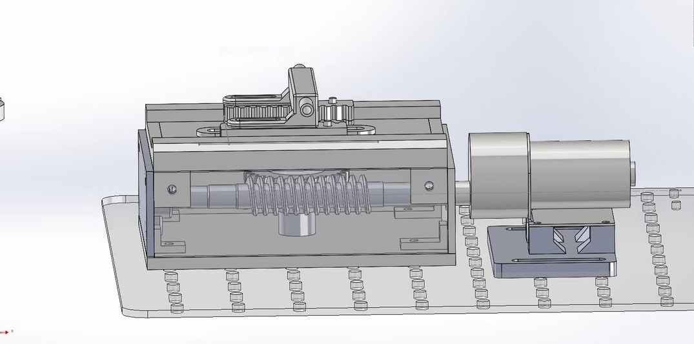
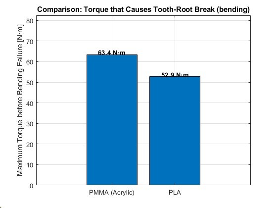
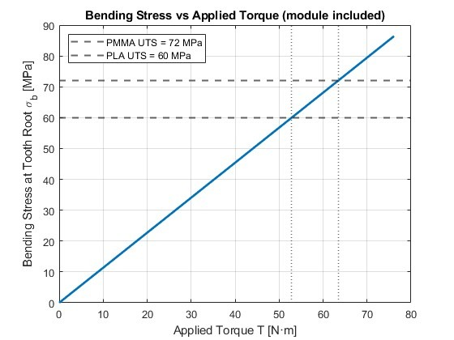
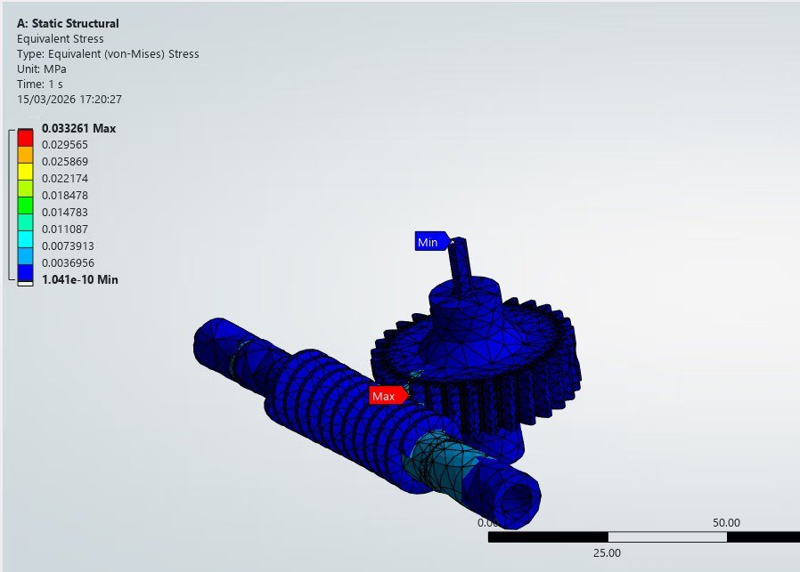
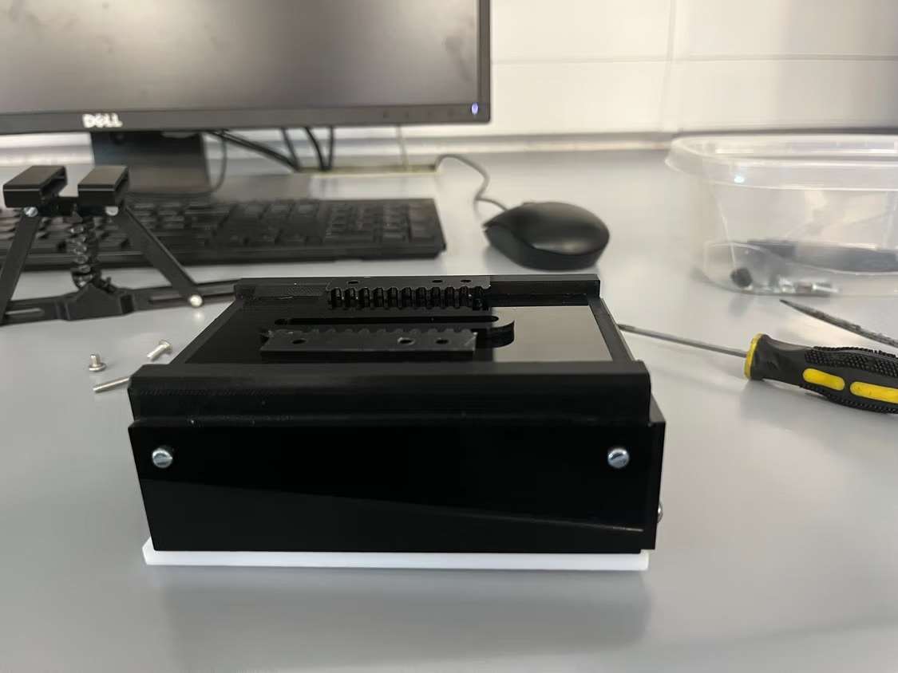
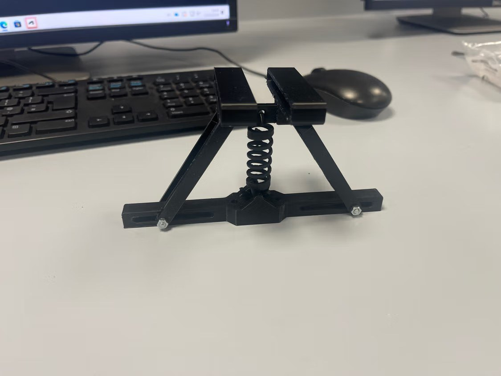
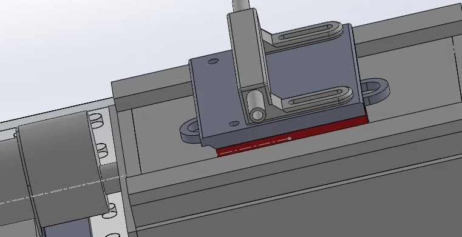
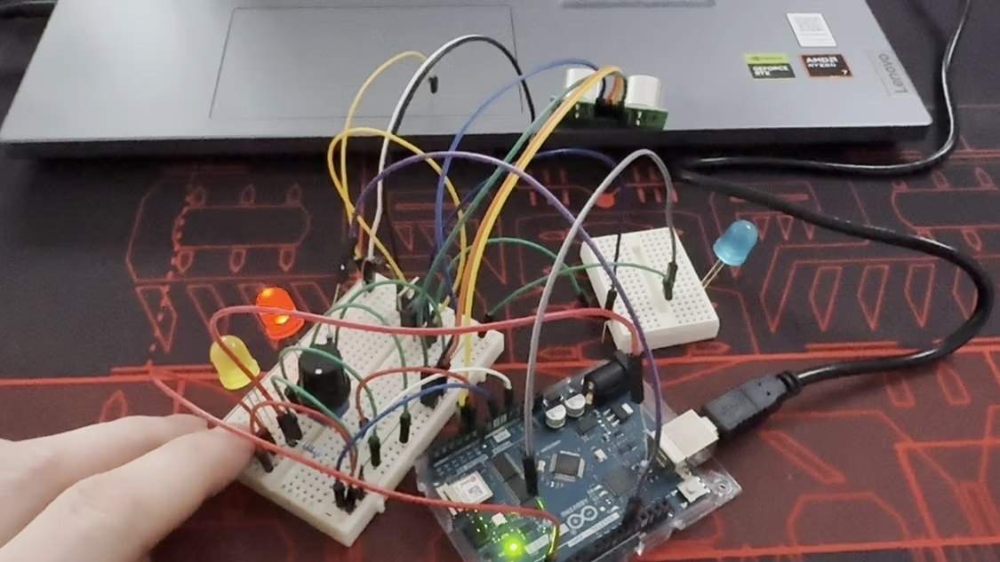
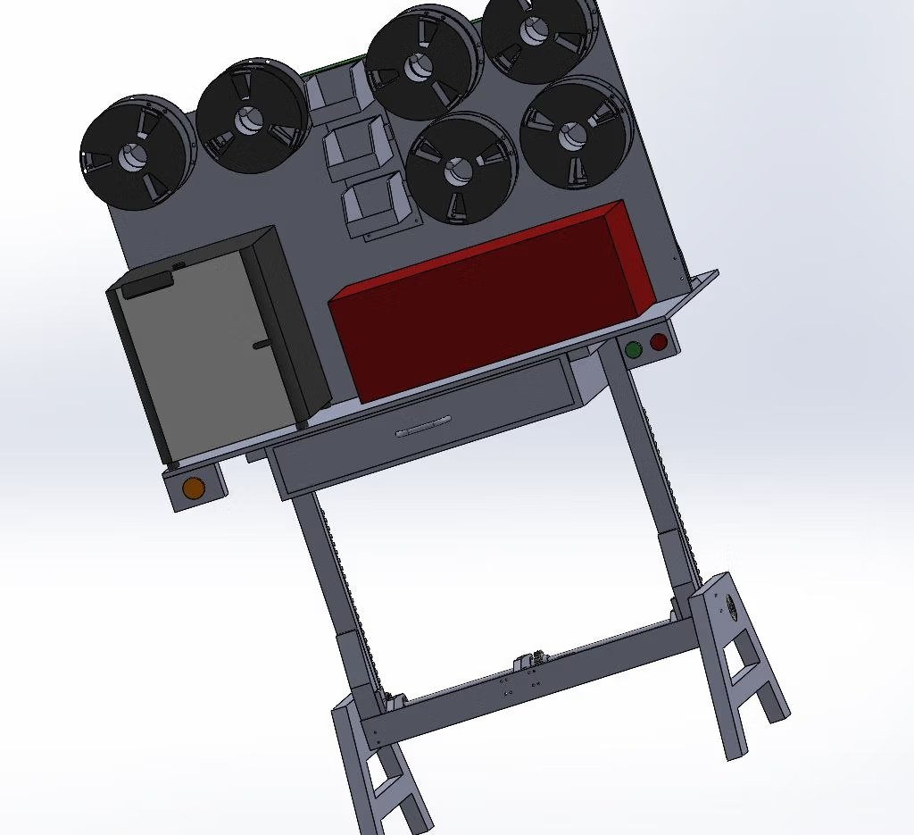

The problem
ATU Sligo’s Sindoh 3D printers only accept proprietary filament spools, which cost around €25 per kg. Comparable third-party filament costs about €10 per kg but comes on spools the printers can’t take. The brief asked for a desktop machine that transfers filament from large third-party spools onto Sindoh spools, using a single motor for both spool rotation and the filament guide, with cantilevered spool shafts and tool-less spool changes.
Design decisions
To lay filament evenly, a guide has to move back and forth across the spool as it turns. We compared three ways of getting that motion from the motor: a lead screw with a return spring, a crank and slider, and a segmented gear driving a rack. The segmented gear won on compactness, positive drive and ease of laser cutting. For tension, a spring-loaded roller tensioner beat a dancer arm because it needs no sensors or controller.


Gear material: MATLAB
I wrote a MATLAB script based on the Lewis bending equation to compare laser-cut PMMA (acrylic) with PLA for the load-bearing gears, using a 150 mm pitch diameter, 2 mm module, 30 mm face width and a combined load factor of 1.79. With the geometry identical for both, the comparison comes down to tensile strength (72 MPa for PMMA, 60 MPa for PLA): PMMA reached tooth-root bending failure at 63.4 N·m against 52.9 N·m for PLA, about 20% more torque, so the gears were laser cut from PMMA. The script uses static strength only; fatigue, contact wear and acrylic’s brittleness under impact were not modelled.
{kind=link}

{kind=link}

Structural checks: ANSYS
The worm gear, the segmented gear and rail, and the cantilevered spool shaft were checked with ANSYS static structural analyses. With an estimated 1 N·m motor torque, both gear analyses returned safety factors above 15, the highest value ANSYS reports. For the spool shaft, a 700 N load at the tip stood in for someone leaning on the machine: ANSYS gave a peak von Mises stress of 7.15 MPa against 6.50 MPa from my hand calculation, a 10% difference. In PLA that meant a minimum safety factor of 3.79, so the shaft was changed to structural steel, which reduced deflection and raised the safety factor to 38.5.

Prototyping
Parts were 3D printed and laser cut at the ATU makerspace, then assembled and revised over several prototypes. Early tests showed the segmented gear catching on the rail as motor load pushed them out of alignment. New tolerances, redesigned worm and helical gears and an added bearing holder reduced this, but the first working prototype still occasionally skipped teeth, which is the first thing I would fix in another iteration.
{kind=link}

{kind=link}

Safety and manufacture
Moving parts sit behind laser-cut guards and the machine has an emergency stop. Flat parts were laser cut to save material and print time, the assembly is bolted rather than glued so worn bearings, springs and gears can be replaced individually, and printed parts use recyclable PLA or PETG.

Team and outcome
I led the machine design, FEA and prototyping. Sip Beckmann built the Arduino control system and Julian Kaminski designed the height-adjustable workbench. The project won 1st place at the ATU Sligo Year 2 Engineering Expo in 2026.
{kind=link}

{kind=link}
